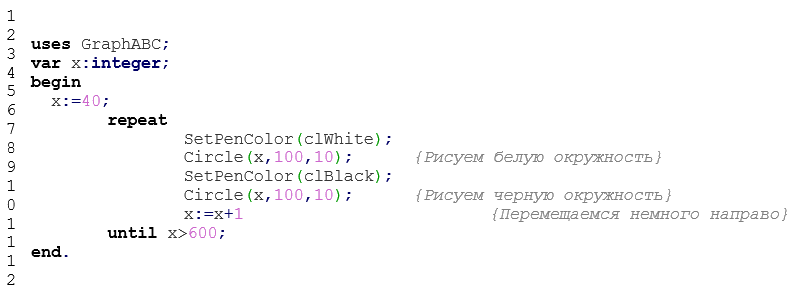
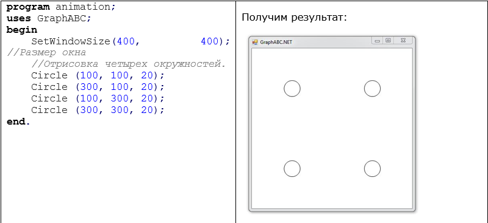
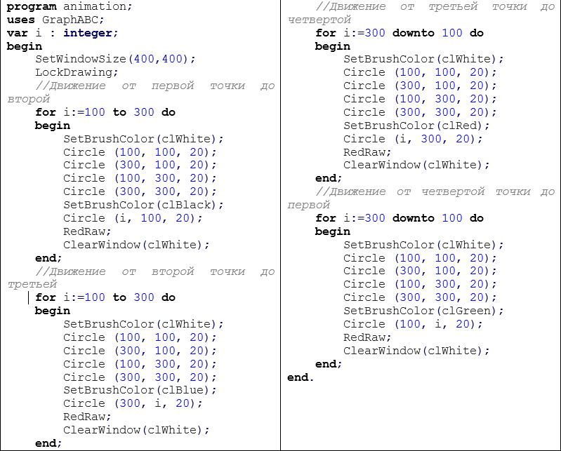
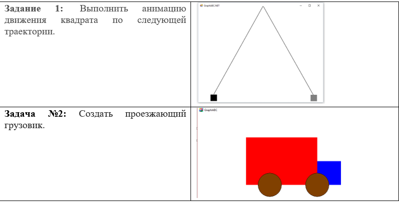

Задания для 1 курса. Практическое занятие №19
Работа с графикой в PascalABC
Анимация в программировании заключается в том, что сначала рисуется фигура цветным инструментом, затем с тем же координатами рисуется та же фигура белым цветом. После чего происходит сдвиг фигуры и действия повторяются. Пример: Воспроизвести движение круга по горизонтали.  Теперь рассмотрим пример: создать движение нескольких (примитивных) фигур по заданной траектории. Без чего мы обойтись не сможем, не сможем мы обойтись без нескольких инструментов: Процедура LockDrawing; Рисование средствами PascalABC происходит очень медленно. Пока оно идет, картинка на экране успевает много раз обновиться. Отсюда мерцание. То есть, мы видим не окончательную картинку, а процесс ее рисования. Окончательную картинку в общем-то не видим — как только она построилась, мы ее тут же стираем и начинаем новый цикл рисования. Для борьбы с этим эффектом придумали двойную буферизацию. Идея в том, чтобы сначала построить картинку в памяти (не выводя на экран), а затем отобразить новый кадр на экране целиком, без промежуточных вариантов, где не хватает половины лучиков. Для этого в начале программы вызываем процедуру LockDrawing. Процедура ClearWindow (color); После каждой прохода по циклу очищает графическое окно указанным цветом, который передается в качестве параметра. После этого все команды рисования будут создавать картинку в памяти (в так называемом вторичном буфере). Непосредственно на экране ничего рисоваться не будет. После того, как очередной кадр анимации полностью отрисован (то есть перед ClearWindow), нужно вызвать процедуру Redraw; Эта процедура вызовет перерисовку всей картины. Нарисуем сначала четыре окружности.  Второй стадией, будет отрисовка пятой окружности и с помощью вышеуказанных процедур и цикла заставим его двигаться по заданной траектории.  Выполните задания:  |